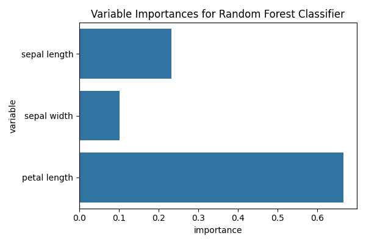
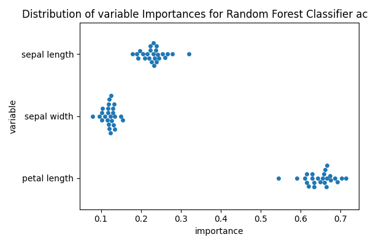

Note
Go to the end to download the full example code.
Inspecting Random Forest models
This example uses the ‘iris’ dataset, performs simple binary classification using a Random Forest classifier and analyse the model.
# Authors: Federico Raimondo <f.raimondo@fz-juelich.de>
#
# License: AGPL
import pandas as pd
import matplotlib.pyplot as plt
import seaborn as sns
from seaborn import load_dataset
from julearn import run_cross_validation
from julearn.utils import configure_logging
Set the logging level to info to see extra information
configure_logging(level='INFO')
2026-05-29 20:45:30,369 - julearn - INFO - ===== Lib Versions =====
2026-05-29 20:45:30,369 - julearn - INFO - numpy: 1.23.1
2026-05-29 20:45:30,369 - julearn - INFO - scipy: 1.10.1
2026-05-29 20:45:30,369 - julearn - INFO - sklearn: 1.0.2
2026-05-29 20:45:30,369 - julearn - INFO - pandas: 2.0.3
2026-05-29 20:45:30,370 - julearn - INFO - julearn: 0.2.5
2026-05-29 20:45:30,370 - julearn - INFO - ========================
Random Forest variable importance
df_iris = load_dataset('iris')
The dataset has three kind of species. We will keep two to perform a binary classification.
We will use a Random Forest classifier. By setting
return_estimator=’final’, the run_cross_validation() function
returns the estimator fitted with all the data.
2026-05-29 20:45:30,374 - julearn - INFO - Using default CV
2026-05-29 20:45:30,374 - julearn - INFO - ==== Input Data ====
2026-05-29 20:45:30,375 - julearn - INFO - Using dataframe as input
2026-05-29 20:45:30,375 - julearn - INFO - Features: ['sepal_length', 'sepal_width', 'petal_length']
2026-05-29 20:45:30,375 - julearn - INFO - Target: species
2026-05-29 20:45:30,375 - julearn - INFO - Expanded X: ['sepal_length', 'sepal_width', 'petal_length']
2026-05-29 20:45:30,375 - julearn - INFO - Expanded Confounds: []
2026-05-29 20:45:30,376 - julearn - INFO - ====================
2026-05-29 20:45:30,377 - julearn - INFO -
2026-05-29 20:45:30,377 - julearn - INFO - ====== Model ======
2026-05-29 20:45:30,377 - julearn - INFO - Obtaining model by name: rf
2026-05-29 20:45:30,377 - julearn - INFO - ===================
2026-05-29 20:45:30,377 - julearn - INFO -
2026-05-29 20:45:30,377 - julearn - INFO - CV interpreted as RepeatedKFold with 5 repetitions of 5 folds
This type of classifier has an internal variable that can inform us on how _important_ is each of the features. Caution: read the proper scikit-learn documentation (Random Forest)
rf = model_iris['rf']
to_plot = pd.DataFrame({
'variable': [x.replace('_', ' ') for x in X],
'importance': rf.feature_importances_
})
fig, ax = plt.subplots(1, 1, figsize=(6, 4))
sns.barplot(x='importance', y='variable', data=to_plot, ax=ax)
ax.set_title('Variable Importances for Random Forest Classifier')
fig.tight_layout()

However, some reviewers (including myself), might wander about the variability of the importance of these features. In the previous example all the feature importances were obtained by fitting on the entire dataset, while the performance was estimated using cross validation.
By specifying return_estimator=’cv’, we can get, for each fold, the fitted estimator.
2026-05-29 20:45:36,649 - julearn - INFO - Using default CV
2026-05-29 20:45:36,649 - julearn - INFO - ==== Input Data ====
2026-05-29 20:45:36,649 - julearn - INFO - Using dataframe as input
2026-05-29 20:45:36,649 - julearn - INFO - Features: ['sepal_length', 'sepal_width', 'petal_length']
2026-05-29 20:45:36,650 - julearn - INFO - Target: species
2026-05-29 20:45:36,650 - julearn - INFO - Expanded X: ['sepal_length', 'sepal_width', 'petal_length']
2026-05-29 20:45:36,650 - julearn - INFO - Expanded Confounds: []
2026-05-29 20:45:36,651 - julearn - INFO - ====================
2026-05-29 20:45:36,651 - julearn - INFO -
2026-05-29 20:45:36,651 - julearn - INFO - ====== Model ======
2026-05-29 20:45:36,652 - julearn - INFO - Obtaining model by name: rf
2026-05-29 20:45:36,652 - julearn - INFO - ===================
2026-05-29 20:45:36,652 - julearn - INFO -
2026-05-29 20:45:36,652 - julearn - INFO - CV interpreted as RepeatedKFold with 5 repetitions of 5 folds
Now we can obtain the feature importance for each estimator (CV fold)
Finally, we can plot the variable importances for each fold
fig, ax = plt.subplots(1, 1, figsize=(6, 4))
sns.swarmplot(x='importance', y='variable', data=to_plot, ax=ax)
ax.set_title('Distribution of variable Importances for Random Forest '
'Classifier across folds')
fig.tight_layout()

Total running time of the script: (0 minutes 10.282 seconds)